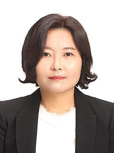
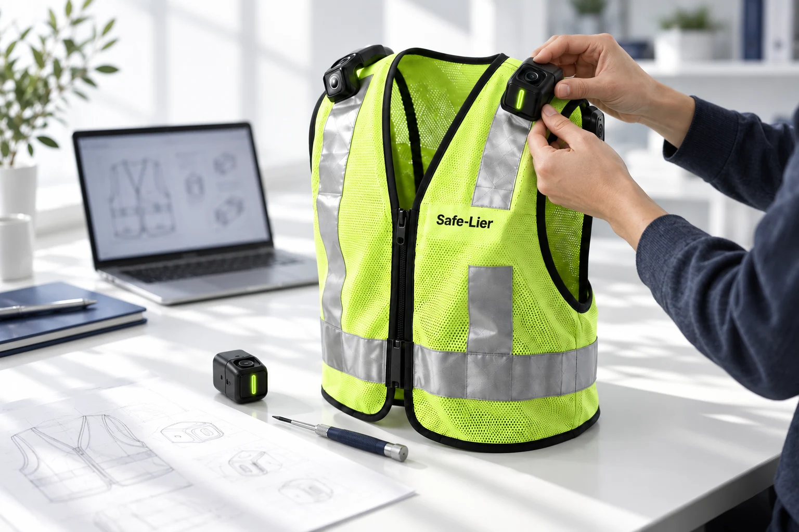
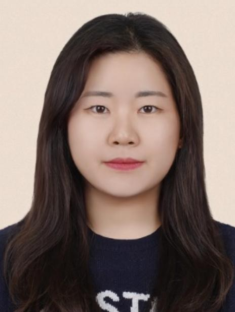
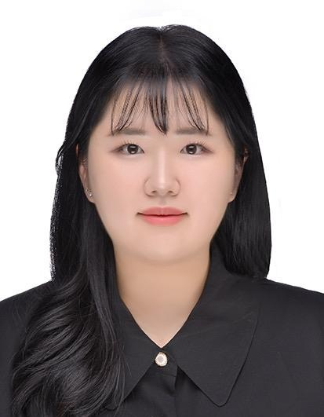
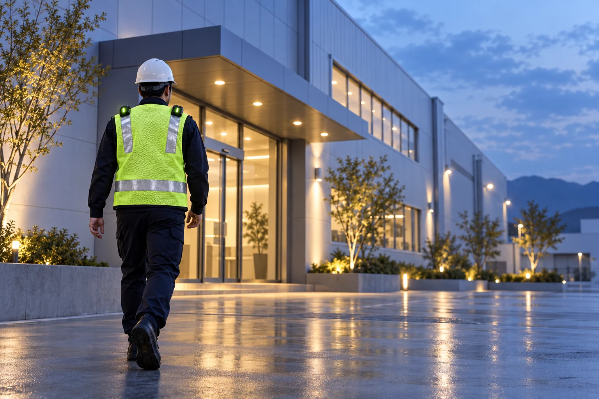

송경순
대표자·총괄삼성전자 리눅스 드라이버·WLAN, BlackBerry QNX 차량용 실시간 OS·네트워킹, 아이센스·휴맥스 펌웨어 상용화 경험. ETRI 5G 과제 실시간 객체인식 AI 개발.
THE PEOPLE BEHIND SAFE-LIER
현장을 이해하는 제품 상용화 경험과
새로운 가능성을 찾는 AI 연구 역량이 만났습니다.

THE PEOPLE BEHIND SAFE-LIER
임베디드 제품 상용화 경험과
AI 연구 역량을 연결해
작업자의 안전을 설계합니다.

삼성전자 리눅스 드라이버·WLAN, BlackBerry QNX 차량용 실시간 OS·네트워킹, 아이센스·휴맥스 펌웨어 상용화 경험. ETRI 5G 과제 실시간 객체인식 AI 개발.

케어크루즈 AI 챗봇 상용 개발. 2025 UST MVP 지원사업 기획 총괄, 3인 팀 1위. ETRI 에세이 자동 채점·장면 내 문자 탐지 연구.

실시간 객체탐지·추적 시스템, 추론 최적화 및 오탐 개선, 항공영상 기반 개방형 어휘 객체탐지 연구. KCC 2024 학부생 논문 우수상.
실시간 객체탐지·추적 시스템 및 추론 최적화 연구.
다수의 창업 지원 사업 관리 경험 보유.
다수의 창업 지원 사업 관리 경험 보유.
수상 이력은 팀원 개인·참여 팀의 이력입니다. 현재 제품 특허·인증, 확정 고객사·협력사 및 실제 고객 후기는 없습니다.

OUR REASON TO BUILD
Safe-Lier는 안전을 뜻하는 Safely와 사람을 뜻하는 -er에서 출발했습니다. 반딧불처럼 어둠을 밝히는 장비, 작업자 곁에서 위험을 먼저 알리는 기술. 세이플라이어가 만들어가는 방향입니다.
WHAT WE BELIEVE
장비와 공간의 관점에서 한 걸음 더 나아가, 작업자의 이동과 주변 위험을 기준으로 생각합니다.
안전관리 담당자 5명의 심층 인터뷰에서 확인한 경고 지연과 설치 부담을 개발의 출발점으로 삼았습니다.
감지 여부, 오경보, 경고 지연시간을 기록하고 통제 시험과 후속 현장 실증으로 개선합니다.
LET’S MAKE WORK SAFER
투자와 제휴, PoC·현장 실증을 함께할 파트너를 기다립니다.